Cleric
Healer. Utrzymuje HP sojuszników i jest podstawą składu grupy. Broń: Mace. Rola: Healer.
Brak osobnego opracowania autora. Liczby i specjalizacje ze źródeł pod kartą; zalecany poziom tylko tam, gdzie źródło go podaje.
Skille aktywne
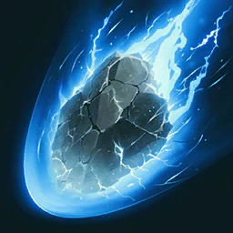
Earth's Retribution
16
50 Earth obrażeń jeden cel w 20 m; basic chain w Thunder i Lightning, potem Discharge
Poziom 1: 319 Na wyższym poziomie: 601
Build obrażeń na endgame (Companion): 16. Przy levelowaniu jeden z późniejszych ataków.
Specjalizacje
- poziom 8+20% MP przywrócone
- poziom 8+20% Discharge trigger chance
- poziom 8+50% Multi-Hit przy trafieniu
- poziom 12-7 s Bolt cooldown na landing Discharge
- poziom 16Ignoruje Block i Evasion
- Common picks2/4/5, 2/4/5, 1/2/5, 2/4/5
karta skilla na aion2.gg · Aion 2 Companion (aion2.grimvane.app), wartości Global przy podanym poziomie skilla.
Judgment Thunder
16
81 Wind obrażeń do 4 wrogów w 4 m of cel 20 m away; 2 stagger; otwiera łańcuch Divine Punishment
Poziom 1: 687 Na wyższym poziomie: 1 321
Build obrażeń na endgame (Companion): 16.
Specjalizacje
- poziom 8-20% MP
- poziom 8Do +12% obrażeń na mniej celów
- poziom 8-10% wróg Combat Speed na 5 s na Divine Punishment
- poziom 1210% Root na 2 s na Divine Punishment
- poziom 16Divine Punishment fires 1 extra time
- Common picks2/4/5, 3/4/5, 1/2/5, 2/3/5
karta skilla na aion2.gg · Aion 2 Companion (aion2.grimvane.app), wartości Global przy podanym poziomie skilla.
Debilitating Mark
brak danych
59 Wind obrażeń do 4 wrogów, potem 74 obrażeń co 1 s na 10 s; wróg PvE Damage Boost -5% (PvP -2,5%); 10 stagger
Poziom 1: 691, potem 866 tick Na wyższym poziomie: 1 352, potem 1 694 tick
Specjalizacje
- poziom 8No MP cost, przywraca 150 MP
- poziom 8-15% cel Defense w trakcie obrażeń over time
- poziom 820% Stun na 3 s
- poziom 12+10% PvE (+5% PvP) Damage Boost cut
- poziom 16Ignoruje Block i Evasion, obrażeń over time twice as often
- Common picks2/3/5, 3/4/5, 2/4/5, 2/4/5
karta skilla na aion2.gg · Aion 2 Companion (aion2.grimvane.app), wartości Global przy podanym poziomie skilla.
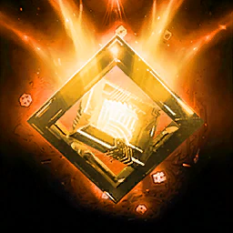
Divine Aura
20
Stationary Aura na 5 s that "periodically" zadaje 394 Earth obrażeń selected cel; tooltip gives brak interval
Poziom 1: 2 948 hit Na wyższym poziomie: 5 315 hit
Build obrażeń (Companion): 20.
Specjalizacje
- poziom 8-40% Move Speed na 3 s do 4 wrogów near Aura
- poziom 8Staje się umiejętnością obszarową
- poziom 8+50% Aura attack speed
- poziom 12+3 s
- poziom 16−10 s CD
- Common picks3/4/5 (1/4/5 w 5v5)
karta skilla na aion2.gg · Aion 2 Companion (aion2.grimvane.app), wartości Global przy podanym poziomie skilla.
Chain of Torment
wcześnie
138 Earth obrażeń do 4 wrogów, potem 173 co 1 s na 10 s; wróg PvE Damage Tolerance -5% (PvP -2,5%); 10 stagger
Poziom 1: 1 038, potem 1 297 tick Na wyższym poziomie: 1 871, potem 2 339 tick
Levelowanie (Companion): jeden z pierwszych skilli pod punkty, razem z Condemnation.
Specjalizacje
- poziom 8Slow na 5 s
- poziom 8+3 s obrażeń over time
- poziom 820% Knockdown na 3 s
- poziom 12+10% PvE (+5% PvP) Damage Tolerance cut
- poziom 16Ignoruje Block i Evasion, obrażeń over time twice as often
- Common picks3/4/5, 1/4/5, 2/4/5, 2/4/5
karta skilla na aion2.gg · Aion 2 Companion (aion2.grimvane.app), wartości Global przy podanym poziomie skilla.
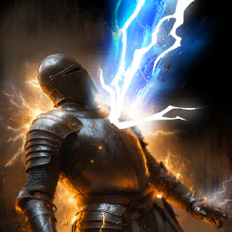
Lightning Strike Scattershot
16
147 obrażeń cel z efektem Stagger, w 20 m
Poziom 1: 872 Na wyższym poziomie: 1 437
Build obrażeń na endgame (Companion): 16.
Specjalizacje
- poziom 8Pochłania 5% HP
- poziom 8Przywraca 120 MP
- poziom 8Mobile
- poziom 12Multi-Hit przy trafieniu
- poziom 16-1 s do all cooldowns przy trafieniu
- Common picks3/4/5
karta skilla na aion2.gg · Aion 2 Companion (aion2.grimvane.app), wartości Global przy podanym poziomie skilla.
Light of Regeneration
brak danych
Leczy ciebie i członków drużyny w 40 m for 616 do 739 co 2 s na 30 s
Poziom 1: 2 371 do 2 845 tick Na wyższym poziomie: 4 315 do 5 178 tick
Specjalizacje
- poziom 8+5% Defense podczas healing
- poziom 8+20% healing przy 50% HP albo less
- poziom 8+5% Incoming Heal podczas healing
- poziom 12+5% Move Speed podczas healing
- poziom 16+5% PvE (+2,5% PvP) Damage Tolerance podczas healing
- Common picks3/4/5 PvP, 2/3/5 PvE
karta skilla na aion2.gg · Aion 2 Companion (aion2.grimvane.app), wartości Global przy podanym poziomie skilla.
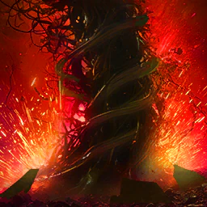
Condemnation
20
325 Earth obrażeń do 4 wrogów wokół cel z efektem Chain of Torment; 7 stagger
Poziom 1: 1 624 Na wyższym poziomie: 2 517
Build obrażeń na endgame (Aion 2 Companion): 20. Krytyk z Earth Punishment resetuje CD. Healer grupowy rozdaje punkty inaczej — patrz sekcja buildów.
Specjalizacje
- poziom 8Przywraca 100 MP przy trafieniu
- poziom 8Do +12% obrażeń na mniej celów
- poziom 820% Root na 3 s
- poziom 12Resets jego cooldown na Critical Hit
- poziom 16Multi-Hit przy trafieniu
- Common picks2/4/5 (3/4/5 w 5v5)
karta skilla na aion2.gg · Aion 2 Companion (aion2.grimvane.app), wartości Global przy podanym poziomie skilla.
Healing Light
16
Leczy ciebie i lowest-HP drużyna member w 40 m for 192 do 211
Poziom 1: 579 do 637 Na wyższym poziomie: 1 020 do 1 122
Build obrażeń (Companion): 16. Healer: też 16. „Minimum pod Ludrę” to warunek serwerów KR, nie Global.
Specjalizacje
- poziom 8+2 użycia z rzędu
- poziom 8+20% przy 50% HP albo less
- poziom 850% szansy na usuwa 1 debuff
- poziom 12+2% HP przywrócone
- poziom 16-2 s cooldown
- Common picks1/3/5 PvP, 1/4/5 PvE
karta skilla na aion2.gg · Aion 2 Companion (aion2.grimvane.app), wartości Global przy podanym poziomie skilla.
Radiant Recovery
20
Leczy ciebie i członków drużyny w 40 m for 379 do 417 i usuwa 1 debuff od każdy
Poziom 1: 1 153 do 1 268 Na wyższym poziomie: 2 012 do 2 213
Build obrażeń (Companion): 20. W PvP Companion trzyma go na własnym klawiszu.
Specjalizacje
- poziom 8Usuwa do 2 debuffs
- poziom 8+1 użycie z rzędu
- poziom 8−3 s CD
- poziom 12+10% Incoming Heal na 10 s
- poziom 16+5% HP przywrócone
- Common picks1/3/5 w all builds
karta skilla na aion2.gg · Aion 2 Companion (aion2.grimvane.app), wartości Global przy podanym poziomie skilla.
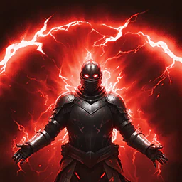
Bolt
20
Charge skill z 3 stages: 987 przy first stage do 2 963 przy top, do do 4 wrogów; 20 do 35 stagger
Poziom 1: 3 076 do 9 228 Na wyższym poziomie: 4 550 do 13 651
Build obrażeń (Companion): 20.
Specjalizacje
- poziom 830% Stun na 3 s przy full charge
- poziom 8+300 Skill Accuracy
- poziom 8+30% Skill Speed
- poziom 12Do +20% obrażeń na mniej celów
- poziom 16Critical Hit przy trafieniu
- Common picks3/4/5 (1/3/5 w 5v5)
karta skilla na aion2.gg · Aion 2 Companion (aion2.grimvane.app), wartości Global przy podanym poziomie skilla.

Defiance
brak danych
Usuwa Stun, Knockdown, Airborne, Grab, Frost i Fear i daje Tenacity (status immunity) na 5 s; redukcja CD nie działa
Poziom 1: 51 s cooldown Na wyższym poziomie: 41 s cooldown
Specjalizacje
- poziom 8Dodaje Blessing of Regeneration
- poziom 8Przywraca 1 000 Stamina
- poziom 8Przywraca 10% HP
- poziom 12+2 s Tenacity
- poziom 16+50% PvE (+25% PvP) Damage Tolerance w trakcie Tenacity
- Common picks2/4/5 PvP, 2/3/5 PvE
karta skilla na aion2.gg · Aion 2 Companion (aion2.grimvane.app), wartości Global przy podanym poziomie skilla.
Pasywki
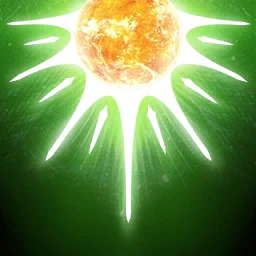
Warm Benediction
brak danych
+6% Max HP, +7 Max MP
Poziom 1: +15%, +25 Na wyższym poziomie: +25%, +45
Pasywka nie ma specjalizacji.
karta skilla na aion2.gg · Aion 2 Companion (aion2.grimvane.app), wartości Global przy podanym poziomie skilla.
Empyrean Lords' Benediction
brak danych
+200 Block; leczy ciebie 53 do 64 na Block (wewnętrzny CD 3 s)
Poziom 1: 233 do 280 Na wyższym poziomie: 444 do 533
Pasywka nie ma specjalizacji.
karta skilla na aion2.gg · Aion 2 Companion (aion2.grimvane.app), wartości Global przy podanym poziomie skilla.
Empyrean Lord's Grace
brak danych
+100 Critical Hit, +0,2% Double Chance, 71 dodatkowe obrażenia przy trafieniu atakiem (wewnętrzny CD 1 s)
Poziom 1: +145, +2%, 355 Na wyższym poziomie: +195, +4%, 550
Pasywka nie ma specjalizacji.
karta skilla na aion2.gg · Aion 2 Companion (aion2.grimvane.app), wartości Global przy podanym poziomie skilla.
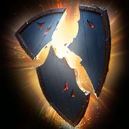
Healing Enhancement
10
Leczenie Boost +22,4% of Attack
Poziom 1: +26% Na wyższym poziomie: +30%
Companion: na 99% z 151 Clericów na poziomie 45.
Pasywka nie ma specjalizacji.
karta skilla na aion2.gg · Aion 2 Companion (aion2.grimvane.app), wartości Global przy podanym poziomie skilla.
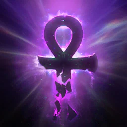
Immortal Veil
brak danych
+2% Defense, +100 Critical Hit Resist
Poziom 1: +20%, +190 Na wyższym poziomie: +40%, +290
Pasywka nie ma specjalizacji.
karta skilla na aion2.gg · Aion 2 Companion (aion2.grimvane.app), wartości Global przy podanym poziomie skilla.
Heal Block
brak danych
7% chance na attack do cut cel's Incoming Heal o 32% na 5 s (5 s cooldown)
Poziom 1: 50% Na wyższym poziomie: 70%
Pasywka nie ma specjalizacji.
karta skilla na aion2.gg · Aion 2 Companion (aion2.grimvane.app), wartości Global przy podanym poziomie skilla.
Prayer of Concentration
brak danych
At 50% HP albo less, 424-obrażeń tarcza i +20% leczenie Boost na 30 s (CD 60 s)
Poziom 1: 1 648 tarcza Na wyższym poziomie: 2 844 tarcza
Pasywka nie ma specjalizacji.
karta skilla na aion2.gg · Aion 2 Companion (aion2.grimvane.app), wartości Global przy podanym poziomie skilla.
Earth's Grace
10
+10,5% Critical Damage Boost, +100 Accuracy
Poziom 1: +15% Na wyższym poziomie: +20%
Companion: na 10 od razu po odblokowaniu na poziomie postaci 21. Bez bramki poziomów.
Pasywka nie ma specjalizacji.
karta skilla na aion2.gg · Aion 2 Companion (aion2.grimvane.app), wartości Global przy podanym poziomie skilla.
Survival Willpower
brak danych
+17% Status Effect Resist; under Stun, Knockdown, Airborne, Frost albo Fear, +12% PvE Damage Tolerance na 5 s (CD 60 s) i stacking resist
Poziom 1: +35%, +30% Na wyższym poziomie: +55%, +50%
Pasywka nie ma specjalizacji.
karta skilla na aion2.gg · Aion 2 Companion (aion2.grimvane.app), wartości Global przy podanym poziomie skilla.
Radiant Benediction
brak danych
Leczy ciebie i członków drużyny w 40 m for 384 do 461 przy trafieniu atakiem (5 s cooldown)
Poziom 1: 546 do 655 Na wyższym poziomie: 737 do 884
Pasywka nie ma specjalizacji.
karta skilla na aion2.gg · Aion 2 Companion (aion2.grimvane.app), wartości Global przy podanym poziomie skilla.
Stygmy
Benevolence
healer
Leczy ciebie i drużyna w 40 m for 90 do 100 co 2 s na 20 s (482 do 530 przy 20)
Poziom 1: 90 s Poziom 10: 200 Stamina każdy 5 s
W zestawie healera grupowego (Companion).
Perki stygmy
- poziom 2090 s
- Base effectLeczy ciebie i drużyna w 40 m for 90 do 100 co 2 s na 20 s (482 do 530 przy 20)
- poziom 5+10 s
- poziom 10200 Stamina każdy 5 s
- poziom 152% HP każdy 5 s
- poziom 20Cleanse każdy 5 s
karta skilla na aion2.gg · Aion 2 Companion (aion2.grimvane.app), wartości Global przy podanym poziomie skilla.
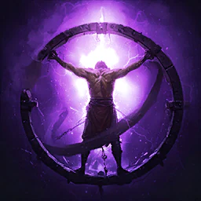
Root
brak danych
939 Earth obrażeń do 4 wrogów, 75% Root na 10 s (100% na NPCs); 15 stagger
Poziom 1: 60 s Poziom 10: +2 s Root
Perki stygmy
- poziom 2060 s
- MP200
- Base effect939 Earth obrażeń do 4 wrogów, 75% Root na 10 s (100% na NPCs); 15 stagger
- poziom 5Becomes mobile
- poziom 10+2 s Root
- poziom 15+25% Root chance
- poziom 20X2 obrażeń over time na rooted cele
karta skilla na aion2.gg · Aion 2 Companion (aion2.grimvane.app), wartości Global przy podanym poziomie skilla.
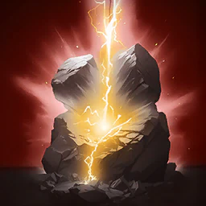
Salvation
z Chanterem
Ciebie are immune do obrażeń i status effects na 3 s; some strong attacks still land; 30 s lockout na Tenaciousness, Salvation, Barrier i Unstoppable effects "if Invincibility stacking is blocked"
Poziom 1: 150 s, falling do 112 s przy 20 Poziom 10: Przywraca 20% Max HP gdy it ends
Gdy w grupie jest Chanter, Companion podmienia nią Light of Protection w buildzie healera.
Perki stygmy
- poziom 20150 s, falling do 112 s przy 20
- Base effectCiebie are immune do obrażeń i status effects na 3 s; some strong attacks still land; 30 s lockout na Tenaciousness, Salvation, Barrier i Unstoppable effects "if Invincibility stacking is blocked"
- poziom 5+100% Incoming Heal
- poziom 10Przywraca 20% Max HP gdy it ends
- poziom 15Base effect też goes do lowest-HP drużyna member
- poziom 20Triggers na jego own gdy Impact-type status trafia ciebie
karta skilla na aion2.gg · Aion 2 Companion (aion2.grimvane.app), wartości Global przy podanym poziomie skilla.
Power Burst
brak danych
1 154 Earth obrażeń jeden cel (3 237 przy 20); 50 stagger
Poziom 1: 60 s Poziom 10: Critical Hit przy trafieniu
Perki stygmy
- poziom 2060 s
- MP200
- Base effect1 154 Earth obrażeń jeden cel (3 237 przy 20); 50 stagger
- poziom 5+20% Skill Speed
- poziom 10Critical Hit przy trafieniu
- poziom 1575% Knock Back
- poziom 2075% Stun na 3 s
karta skilla na aion2.gg · Aion 2 Companion (aion2.grimvane.app), wartości Global przy podanym poziomie skilla.
Absolution
healer
Usuwa do 2 debuffs i leczy ciebie i drużyna w 40 m for 1 602 do 1 762 (3 464 do 3 810 przy 20)
Poziom 1: 90 s Poziom 10: Usuwa all debuffs
Healer grupowy (Companion): Light of Protection, Absolution, Yustiel's Power i Benevolence. Przy Chanterze Salvation wchodzi za Light of Protection.
Perki stygmy
- poziom 2090 s
- Base effectUsuwa do 2 debuffs i leczy ciebie i drużyna w 40 m for 1 602 do 1 762 (3 464 do 3 810 przy 20)
- poziom 5−30 s CD
- poziom 10Usuwa all debuffs
- poziom 15+5% HP przywrócone
- poziom 201,5% HP co 2 s na 10 s
karta skilla na aion2.gg · Aion 2 Companion (aion2.grimvane.app), wartości Global przy podanym poziomie skilla.
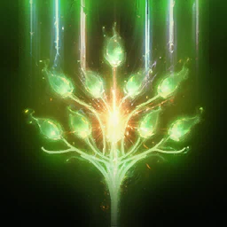
Voice of Doom
brak danych
1 100 Earth obrażeń do 4 wrogów, potem 2 862 co 1 s na 20 s i -60% Incoming Heal i HP potion recovery
Poziom 1: 60 s Poziom 10: Usuwa Protective Shields przy trafieniu
Perki stygmy
- poziom 2060 s
- MP200
- Base effect1 100 Earth obrażeń do 4 wrogów, potem 2 862 co 1 s na 20 s i -60% Incoming Heal i HP potion recovery
- poziom 5Do +20% obrażeń na więcej celów
- poziom 10Usuwa Protective Shields przy trafieniu
- poziom 15-200 Critical Hit Resist for czas trwania
- poziom 20-50% obrażeń over time interval
karta skilla na aion2.gg · Aion 2 Companion (aion2.grimvane.app), wartości Global przy podanym poziomie skilla.
Summon Resurrection
gdy walka tego wymaga
Resurrects fallen drużyna member w 40 m of ciebie
Poziom 1: 120 s, falling do 82 s przy 20 Poziom 10: Invincible na 3 s po rising
Wskrzesza jednego członka drużyny w 40 m. Opisy KR o wskrzeszeniu całej grupy nie zgadzają się z tooltipem Global (Companion).
Perki stygmy
- poziom 20120 s, falling do 82 s przy 20
- Base effectResurrects fallen drużyna member w 40 m of ciebie
- poziom 5-1 s cast time
- poziom 10Invincible na 3 s po rising
- poziom 15Przywraca 20% Max HP
- poziom 20Invincible na 5 s po rising
karta skilla na aion2.gg · Aion 2 Companion (aion2.grimvane.app), wartości Global przy podanym poziomie skilla.
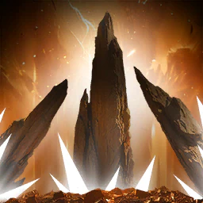
Earth Punishment
20 w buildzie obrażeń
1 186 Earth obrażeń, potem 1 186 co 1 s na 10 s (3 328 przy 20); 20 stagger
Poziom 1: 30 s Poziom 10: Earth's Blessing: +10% Double Chance do ciebie, +5% do drużyna
Stygma levelowania i obrażeń. Companion: pierwsza przy solo. U najsilniejszych Clericów Global (aion2data, skrót z wyszukiwania) zwykle 20 i w slocie u prawie wszystkich.
Perki stygmy
- poziom 2030 s
- MP200
- Base effect1 186 Earth obrażeń, potem 1 186 co 1 s na 10 s (3 328 przy 20); 20 stagger
- poziom 5Condemnation lands as Critical Hit na jego cel
- poziom 10Earth's Blessing: +10% Double Chance do ciebie, +5% do drużyna
- poziom 15Earth's Blessing: +10% Attack i Defense do ciebie, +5% do drużyna
- poziom 20+10 s do Earth Punishment i Earth's Blessing
karta skilla na aion2.gg · Aion 2 Companion (aion2.grimvane.app), wartości Global przy podanym poziomie skilla.
Light of Protection
w zestawie
+10,5% PvE Damage Boost i PvE Damage Tolerance (+5,25% PvP) dla ciebie i pobliskich członków drużyny; 15% przy 10, 20% przy 20
Poziom 1: 5 s, toggle Poziom 10: +100 Accuracy
Obrażenia i healer (Companion). Nie stackuje się z Undefeated Mantra Chantera: liczy się wyższy poziom, remis wygrywa mantra.
Perki stygmy
- poziom 205 s, toggle
- Base effect+10,5% PvE Damage Boost i PvE Damage Tolerance (+5,25% PvP) dla ciebie i pobliskich członków drużyny; 15% przy 10, 20% przy 20
- poziom 5+10% Incoming Heal
- poziom 10+100 Accuracy
- poziom 15+10% Max HP
- poziom 20+10% Perfect Chance
karta skilla na aion2.gg · Aion 2 Companion (aion2.grimvane.app), wartości Global przy podanym poziomie skilla.
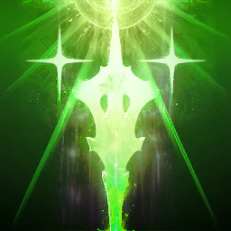
Yustiel's Power
healer
+20% PvE i +10% PvP Damage Tolerance dla ciebie i drużyna w 40 m na 10 s (14,5 s przy 10, 20 s przy 20)
Poziom 1: 60 s Poziom 10: +100 Block i Evasion
W zestawie healera grupowego (Companion).
Perki stygmy
- poziom 2060 s
- Base effect+20% PvE i +10% PvP Damage Tolerance dla ciebie i drużyna w 40 m na 10 s (14,5 s przy 10, 20 s przy 20)
- poziom 510% Max HP tarcza
- poziom 10+100 Block i Evasion
- poziom 15+20% Status Effect Resist
- poziom 20+10% PvE i +5% PvP Damage Tolerance więcej
karta skilla na aion2.gg · Aion 2 Companion (aion2.grimvane.app), wartości Global przy podanym poziomie skilla.
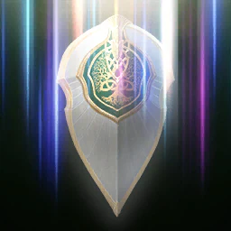
Prayer of Amplification
w zestawie obrażeń
+20% Attack na 10 s (12 s przy 5, 14,5 s przy 10, 20 s przy 20)
Poziom 1: 60 s Poziom 10: X1,5 Empyrean Lord's Grace for czas trwania
Zestaw levelowania i obrażeń (Companion), obok Earth Punishment, Noble Aura i Light of Protection.
Perki stygmy
- poziom 2060 s
- Base effect+20% Attack na 10 s (12 s przy 5, 14,5 s przy 10, 20 s przy 20)
- poziom 5+20% PvE i +10% PvP Damage Boost
- poziom 10X1,5 Empyrean Lord's Grace for czas trwania
- poziom 15X1,5 Earth's Grace for czas trwania
- poziom 20+15% więcej Attack
karta skilla na aion2.gg · Aion 2 Companion (aion2.grimvane.app), wartości Global przy podanym poziomie skilla.
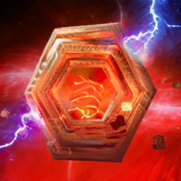
Noble Aura
w zestawie obrażeń
Aura that podąż za tobą na 300 s i atakuje twój cel co 2 s for 472 (1 325 przy 20)
Poziom 1: 60 s Poziom 10: +20 obrażeń cele z efektem Debilitating Mark
Zestaw levelowania i obrażeń (Companion).
Perki stygmy
- poziom 2060 s
- Base effectAura that podąż za tobą na 300 s i atakuje twój cel co 2 s for 472 (1 325 przy 20)
- poziom 5+200 Aura Critical Hit
- poziom 10+20 obrażeń cele z efektem Debilitating Mark
- poziom 15+30% obrażeń cele z Incapacitated Immunity
- poziom 20-1 s Aura attack cooldown
karta skilla na aion2.gg · Aion 2 Companion (aion2.grimvane.app), wartości Global przy podanym poziomie skilla.

Assault Mark
brak danych
891 obrażeń do 4 wrogów, 30% Root (100% na NPCs), do +20% Defense o cele hit
Poziom 1: 120 s Poziom 10: 500 MP obrażeń przy trafieniu
Perki stygmy
- poziom 20120 s
- Base effect891 obrażeń do 4 wrogów, 30% Root (100% na NPCs), do +20% Defense o cele hit
- poziom 5+20% Attack na 5 s przy trafieniu
- poziom 10500 MP obrażeń przy trafieniu
- poziom 15+10 m range
- poziom 20+20% Root chance
karta skilla na aion2.gg · Aion 2 Companion (aion2.grimvane.app), wartości Global przy podanym poziomie skilla.
Build PvE
Na tej klasie nie ma osobnej, dokończonej strony autora. Poniżej są buildy z Aion 2 Companion (Global), a nie jeden werdykt.
- Levelowanie i solo: stygmy Earth Punishment, Noble Aura, Prayer of Amplification i Light of Protection. Samotnie Earth Punishment jest lepszą pierwszą stygmą.
- Obrażenia na endgame: ten sam zestaw. Z Chanterem w grupie: Absolution, Earth Punishment, Noble Aura, Prayer of Amplification. Condemnation, Divine Aura, Bolt i Radiant Recovery do 20; Judgment Thunder, Lightning Strike Scattershot, Healing Light i Earth's Retribution do 16. Earth Punishment sprawia, że Condemnation zawsze kryje na tym celu, a krytyk resetuje Condemnation.
- Healer grupowy: Light of Protection, Absolution, Yustiel's Power i Benevolence. Z Chanterem Salvation wchodzi za Light of Protection. Summon Resurrection, gdy walka tego wymaga. Drugi zestaw healera: Benevolence, Absolution, Light of Protection, Summon Resurrection.
- PvP: pojedynki — Prayer of Amplification, Light of Protection, Yustiel's Power, Voice of Doom. Walka grupowa bierze Absolution zamiast Voice of Doom. Companion: na Global nie ułożył się jeszcze blockowy zestaw stygm Clerica; na KR block idzie z ekwipunku.
Ściąga do pobrania
Obrazki z tego samego opracowania co karty. Tekst na stronie jest przepisany obok, żeby dało się go wyszukać. Na ściądze skilli Clerica piąta specjalizacja bywa ucięta („+1 więcej”) — pełną listę ma karta powyżej.
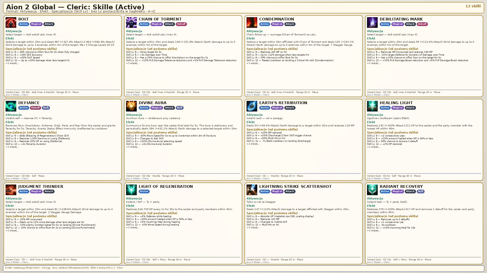
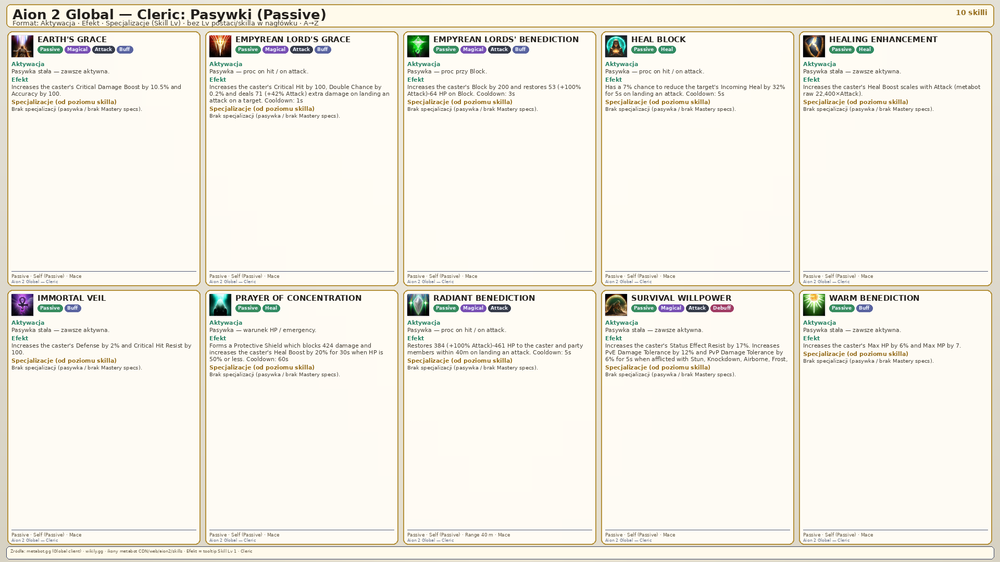
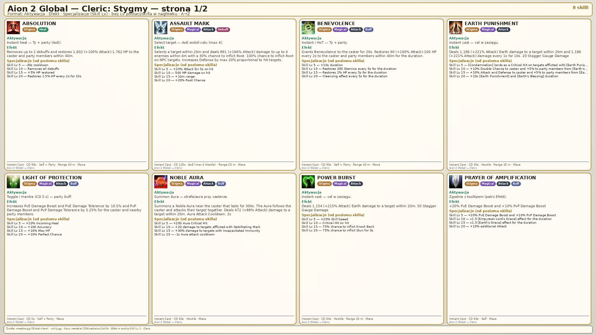
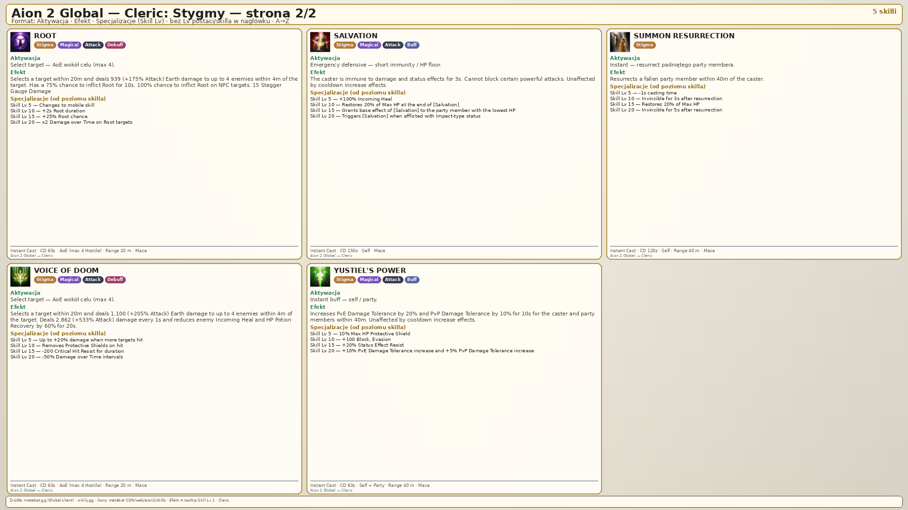
Źródła
- Aion 2 Companion — skille, pasywki, stygmy
- aion2.gg — lista skilli klasy
- aion2.gg — build PvE
- aion2data.com — dane klienta Global
Data tej strony: 11 listopada 2026. Edycja Global (Steam, EU). Nazwy skilli są po angielsku, tak jak w kliencie.